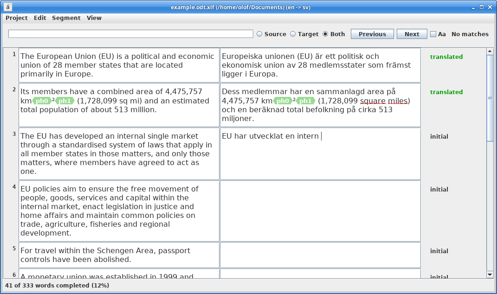
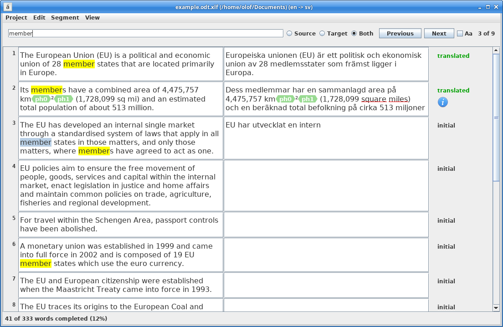
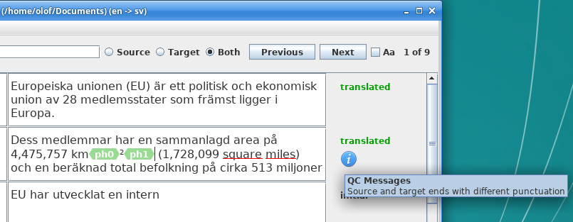

What is TNT?
TNT is a basic open source computer-assisted translation tool.
| Features | Screenshots | Limitations | Supported file formats | Download | Development |
Features
- Import, translate and export documents of several formats (see list of supported file formats below)
- Spellchecking using Hunspell
- Open and edit XLIFF 2.0 files
Limitations
Only ODT and DOCX are currently supported for importing/exporting. No translation memory tool or terminology manager.
Supported file formats
Import/export:
- ODT
- DOCX
Editing:
- XLIFF 2.0
Download
Windows
Download and extract tnt-0.3-windows-x64.zip
Run the application by executing tnt.exe
Linux:
Download tnt-0.3-linux-x64.AppImage
Use a terminal to make the AppImage executable and run it:
chmod +x tnt-0.2-linux-x64.AppImage ./tnt-0.2-linux-x64.AppImage
Screenshots



Old releases
All releases are located at https://github.com/foolo/tnt/releases
Development
The source code is located at https://github.com/foolo/tnt